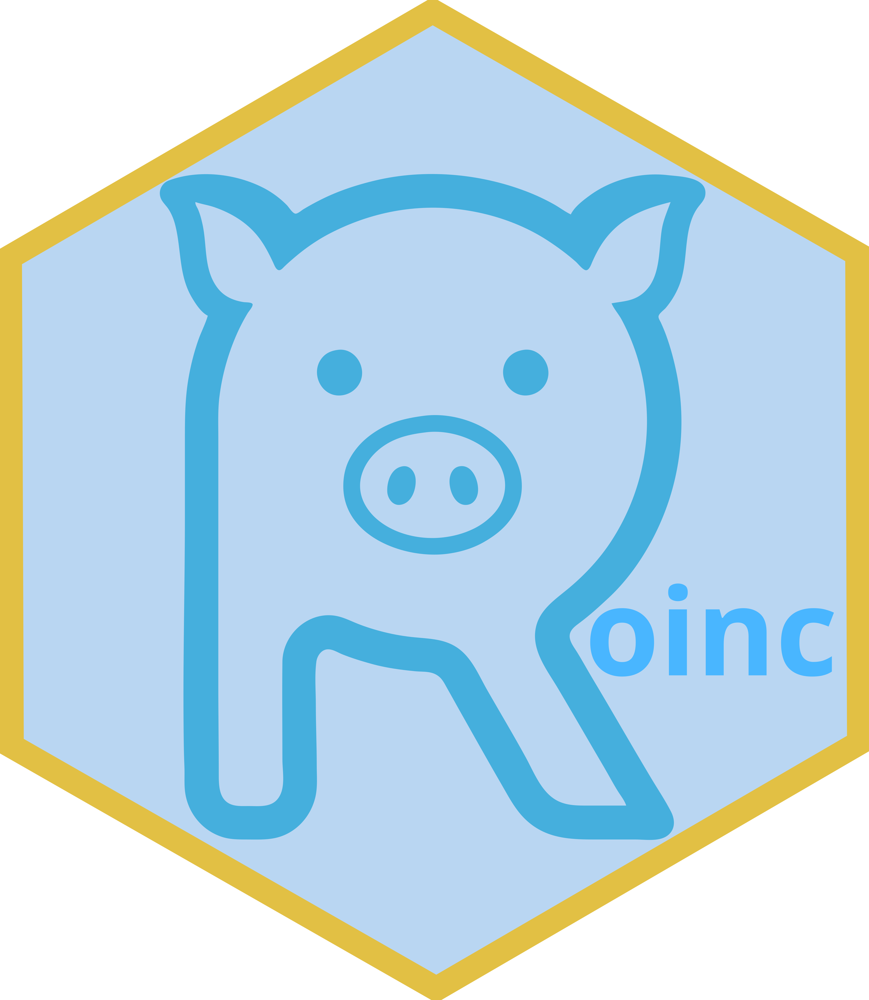

List of the LOINC Linguistic Variants that are available and their producers (translators).
Source:R/data.R
linguistic_variants.RdLOINC Linguistic Variants are provided by an international community of volunteer translators.
Format
A tibble with 5 fields
| Variable | Description |
| ID | The unique identifier for a particular language variant within the LOINC database. This identifier does not have any meaning outside of LOINC. |
| ISO_LANGUAGE | The ISO language code |
| ISO_COUNTRY | The ISO-2C country code |
| LANGUAGE_NAME | A combination of the name of the language and the country in which that variant is used |
| PRODUCER | The person or organisation that provided the translation |
Examples
linguistic_variants
#> ID ISO_LANGUAGE ISO_COUNTRY LANGUAGE_NAME
#> 1 28 es MX Spanish (MEXICO)
#> 2 29 pl PL Polish (POLAND)
#> 3 32 ar JO Arabic (JORDAN)
#> 4 5 zh CN Chinese (CHINA)
#> 5 7 es AR Spanish (ARGENTINA)
#> 6 8 fr CA French (CANADA)
#> 7 10 et EE Estonian (ESTONIA)
#> 8 11 pt BR Portuguese (BRAZIL)
#> 9 12 es ES Spanish (SPAIN)
#> 10 13 ko KR Korean (KOREA, REPUBLIC OF)
#> 11 15 de DE German (GERMANY)
#> 12 16 it IT Italian (ITALY)
#> 13 17 el GR Greek (GREECE)
#> 14 18 fr FR French (FRANCE)
#> 15 19 tr TR Turkish (TURKEY)
#> 16 20 ru RU Russian (RUSSIAN FEDERATION)
#> 17 22 nl NL Dutch (NETHERLANDS)
#> 18 23 fr BE French (BELGIUM)
#> 19 24 de AT German (AUSTRIA)
#> 20 33 cs CZ Czech (CZECHIA)
#> 21 30 uk UA Ukrainian (UKRAINE)
#> PRODUCER
#> 1 Manuel Aragonés. Deep Dive Data Science.
#> 2 Medical University of Lodz (UMED) and Polish Society of Laboratory Diagnostics (PTDL)
#> 3 MedLabs Group: Dr. Manar Agha Al-Nimer, MSc, PhD Integration, PDHDA-Vice CEO; Dr. Majdi Abu Hantash, MD, Consultant Clinical Pathologist-Chief Medical Information Officer; Dr. Nashat Dahabreh, PhD Biochemistry - Vice CEO - Scientific Affairs; Dr. Ayman Al-Rawabdeh, DHI, MSc ME, GDBMI, CPHIMS-CEO of AHTS
#> 4 Lin Zhang, A LOINC volunteer from China
#> 5 Conceptum Medical Terminology Center
#> 6 Canada Health Infoway Inc.
#> 7 Estonian E-Health Foundation
#> 8 HL7 Brazil Institute
#> 9 the Clinical Laboratory Committee of SERVICIO EXTREMEÑO DE SALUD, with the support of IQVIA
#> 10 Korean Ministry for Health, Welfare, and Family Affairs
#> 11 Friedrich-Alexander-Universität Erlangen-Nürnberg on behalf of the Federal Institute for Drugs and Medical Devices (BfArM)
#> 12 Consiglio Nazionale delle Ricerche
#> 13 Konstantinos Chalkias, MD, MSc, Ioannis Boutas, MD, Eirini Tzourtzoukli, Medical Coding Department, KE.TE.K.N.Y. S.A., the Greek DRG Institute
#> 14 ANS - Agence du Numérique en Santé French e-Health Agency
#> 15 LOINC Turkish Translation Group and the Turkish Ministry of Health
#> 16 Yaroslavl State Medical Academy
#> 17 National IT Institute for HealthCare (Nictiz)
#> 18 Jean M. Prevost, MD, Biopathology
#> 19 ELGA, Austria
#> 20 Aricoma
#> 21 Development of Ukrainian content is going on under the stewardship of the Ministry of Health of Ukraine, National Health service of Ukraine with support of multiple stakeholders and donors